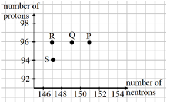
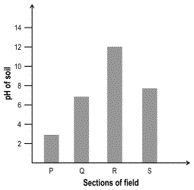
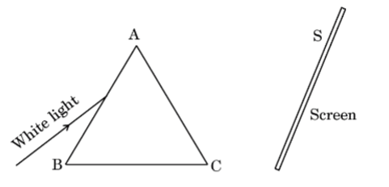
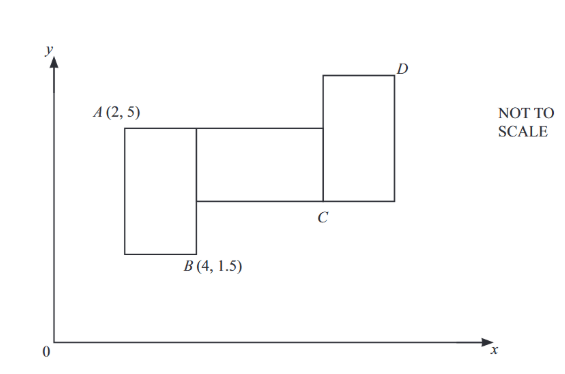
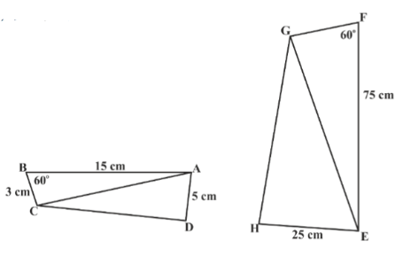
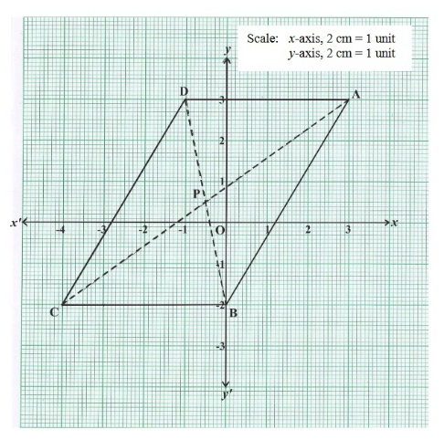
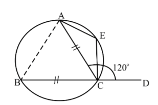
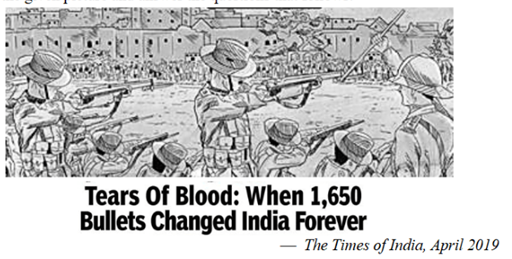

Question
Curium is a radioactive element with the symbol 96Cm247 named in honour of Madam Curie. The graph of number of protons vs number of neutrons for some elements are shown below:

(a) Which point on the graph indicates the element Cm?
(b) Which point on the graph indicates daughter nucleus after Cm undergoes radioactive decay of 1 α followed by 2 β?
(c) State the mass number of the daughter nucleus.
Why This Question Is Good
This question excels because it:
- Uses an unusual representation: A graph of protons vs. neutrons is not a format students typically encounter in textbooks, forcing them to apply understanding rather than recall memorized procedures.
- Tests a core concept: Students must apply the relationship Mass number = protons + neutrons to locate the element on the graph.
- Requires multi-step reasoning: In part (b), students must understand how radioactive decay changes particle numbers:
- α-particle emission: decreases protons by 2, neutrons by 2
- β⁻ decay: increases protons by 1, mass number unchanged
- Has diagnostic value: Distractors are designed to capture specific misconceptions, such as mixing up proton and neutron numbers or misapplying decay rules.
Question
Hydrangea plants develop blue or pink flowers depending on the availability of aluminium from the soil. When the soil is acidic, aluminium is more available to the roots, resulting in blue flowers. When the soil is alkaline, the availability of aluminium decreases, resulting in pink flowers.
The graph below shows the pH of the soil at different sections of a field.

In which section of the field will the flowers on ALL the hydrangea plants definitely be blue in colour and in which section will the flowers on ALL the hydrangea plants definitely be pink in colour?
| Option |
Blue Flowers |
Pink Flowers |
|
A |
Section P and Q |
Section R and S |
|
B |
Section R and S |
Section P and Q |
|
C |
Section P, Q and S |
Section R |
|
D |
Section P |
Section R |
Why This Question Is Good
This question demonstrates excellence through:
- Authentic real-world context: Uses an authentic real-life context (hydrangea colour change in soil).
- Interdisciplinary integration: Combines chemistry (pH and aluminium availability) with biology (pigment formation in flowers), mirroring how science works in reality.
- Graph interpretation skills: Instead of being told which sections are acidic or alkaline, students must deduce it from the graph, developing a key scientific skill.
- Unfamiliar context: Not a standard textbook question, so students must reason rather than rely on memorised examples.
- Meaningful distractors: Wrong options capture common misconceptions:
- Misinterpreting the pH scale (thinking high pH = acidic)
- Failing to distinguish "all plants" from "most plants"
Question
The body of human beings works within the pH range of:
A) 6.1 to 6.8
B) 6.5 to 7.3
C) 7.0 to 7.8
D) 7.5 to 8.1
Why This Question Is Bad
Critical Flaws:
- Contradicts student knowledge: Students are explicitly taught that:
- The stomach is acidic (pH ~2)
- The small intestine is alkaline (pH ~8)
- Blood is slightly alkaline (pH ~7.4)
- Creates logical impossibility: Students cannot pick any single pH range because no option applies to all body parts.
- Zero diagnostic value: The question provides no insight into student understanding of pH or body chemistry.
- Creates misconceptions: Implies falsely that the human body operates at a single pH range, which is scientifically incorrect.
Question
A person allowed a narrow beam of white light from the sun to enter a dark room through a small aperture and placed a glass prism in its path in such a manner that the beam falls on the face AB of the prism as shown in the figure.

A screen S is placed on the other side of the prism, facing AC. On turning the prism slowly, a beautiful band of colours is obtained on the screen. It is the spectrum of sunlight.
(a) Name the phenomenon due to which the prism splits the incident white light into a band of colours.
(b) State the reason for getting a band of seven colours in the above case.
(c) Explain with the help of a labelled ray diagram, an experimental arrangement to show the recombination of the spectrum of white light.
Why This Question Is Bad
Critical Flaws:
- Defeats the purpose of case-based questions: Case-based questions are designed to assess higher-order thinking—application, reasoning, interpretation, and connection to real situations. When students can answer without engaging with the context, the format fails entirely.
- Non-functional context: The passage becomes mere decoration—a story added on top rather than an integral part of the solution process.
- Wastes cognitive load: Increases reading burden without adding any cognitive value or diagnostic insight.
- Wastes assessment time: Students spend time reading unnecessary text, reducing time for genuine assessment.
Better approach: Either make the context essential to answering the questions, or remove it entirely and ask the questions directly.
Question
A pattern is formed by 3 congruent rectangles. Each rectangle is a rotation of 90° around one vertex of the rectangle next to it.
The point A has coordinates (2,5).
The point B has coordinates (4,1.5).
Work out the coordinates of point C and D.

Why This Question Is Good
This question excels because it:
- Tests a key concept in coordinate geometry: Students must determine coordinates of points C and D using only the given coordinates of A and B, while also finding the length and width of the rectangle.
- Uses an unfamiliar format: This is not a problem students typically encounter in textbooks or other resources, forcing them to apply understanding rather than recall procedures.
- Requires genuine reasoning: The question cannot be solved by guessing or recalling a formula. It demands clear understanding of spatial transformations and the coordinate system, encouraging students to think both geometrically and algebraically.
- Tests deeper understanding: Students must solve the problem without coordinate divisions (grid lines). This tests their true understanding of the coordinate system rather than just visually identifying coordinates.
Question
In the given diagram ▲ABC ~ ▲EFG. If ∠ABC = ∠EFG = 60°, then the length of the side FG is:
(a) 15 cm
(b) 20 cm
(c) 25 cm
(d) 30 cm

Why This Question Is Good
A simple MCQ that tests the application of similar triangles. Using the given information about triangles ABC & EFG being similar, students are required to identify the corresponding sides, ratio and hence find the measure of FG.
This question excels because it:
- Well-designed distractors: Wrong options reflect likely errors and common misconceptions. They are numerically close and reasonable, making them effective at capturing specific misunderstandings.
- Tests conceptual understanding: This question distinguishes between surface-level understanding and genuine comprehension of similarity.
- Non-standard visual representation: The similar triangles are presented tilted, rotated, and oriented differently, breaking away from textbook-style figures and requiring deeper engagement.
- Demands visualization skills: All side measures are not directly aligned. Students must visualize and infer triangle shape and corresponding sides correctly based on angles and orientation.
- Prevents algorithmic solving: The question cannot be solved by simply plugging values into a ratio. Students must first identify corresponding sides, then apply the ratio correctly.
Question
In the given graph ABCD is a parallelogram.

Using the graph, answer the following:
(a) Write the coordinates of ABCD.
(b) Calculate the coordinates of "P", the point of intersection of the diagonals AC and BD.
(c) Find the slope of sides CB and DA and verify that they represent parallel lines.
(d) Find the equation of the diagonal AC.
Why This Question Is Bad
Critical Flaws:
- Creates unnecessary cognitive load: Students might spend significant time trying to reconcile the mismatch between the grid and the scale, especially under exam pressure. This increases anxiety and leads to inconsistent interpretations.
- Undermines fair assessment: Different students may interpret the contradictory information differently, leading to inconsistent scoring that reflects confusion rather than mathematical ability.
- Valid intent, poor execution: While the mathematical intent of finding coordinates, midpoints, slopes, and equations is valid, the contradictory scale introduces ambiguity and creates unnecessary barriers to correct and fair assessment.
Question
In the given diagram, chords AC and BC are equal. In ∠ACD = 120°, then ∠AEC is:
(a) 30 °
(b) 60 °
(c) 90 °
(d) 120 °

Why This Question Is Bad
Critical Flaws:
- Defeats the purpose of the question: The question tests linear angles, isosceles triangle properties, and cyclic quadrilateral properties. However, it can be solved trivially through visual inspection and elimination.
- Visual obviousness undermines assessment: Since angle AEC appears clearly obtuse in the diagram, options like 30°, 60°, or 90° are obviously incorrect geometrically. Students can arrive at the correct answer just by observing the figure and eliminating impossible options.
- No diagnostic value: The question becomes solvable without any understanding of the mathematical concepts it claims to test—linear angles, isosceles triangles, or cyclic quadrilaterals.
- Rewards test-taking skills over knowledge:Students who are good at elimination strategies can succeed without understanding the underlying geometry, while students who attempt the proper mathematical solution waste valuable time.
Question
This story is set some years in the future. A scientist, Lotta, is involved in a research project studying migratory birds called terns.
Paragraph 1: I’m watching when the bird is caught. Her wing clips the hair-thin wire, closing the basket gently over her. I approach, not breathing, reluctant to scare her. She ruffles feathers, a small burst of defiance before my fingers close around her. I have to be quick now, deftly looping the band over her leg. The plastic tightens firmly, securing the lightweight tracker. The tracker blinks once,confirming it’s working. Her heartbeat pounds fast and fragile inside my palm. I place her back in her nest, edging away. She explodes free, swooping at me suddenly, giving a shrill cry.I grin, thrilled. I’ve been out here for days, pecked a dozen times, but have now tagged three terns. My tent was blown into the sea last night. My cheap rental car’s blessedly warm.I check my notes again before setting off: Ennis Malone. Captain of the fishing boat Raven – in the days when there were fish to catch.
Paragraph 13: Months later, the remote shore ahead is magnificent – but empty. I’d told myself it was over when the signals stopped after the last storm; still somehow I’d hoped to see birds, or something,anything, alive. The boat can go no further, so we continue on foot towards the ridge – the only movement anywhere. My heart breaks and then jumps … because something just flew across the sky. More somethings appear, swooping and soaring. I scramble to the summit and – oh,hundreds of terns smother an expanse of unspoiled ice below. Yet more dance upon the air. Dipping gracefully, diving hungrily, in a bay bubbling and thrashing with a million scales. Ennis reaches me with a low rumble of laughter, just as a huge whale fin crowns the sparkling surface.We gasp. What else is hiding in these clean, untouched waters – this sanctuary?
Question: Reread paragraphs 1 and 13.
• Paragraph 1 begins 'I'm watching…' and is about the actions of Lotta and the bird.
• Paragraph 13 begins 'Months later…' and is about what Ennis and Lotta discover when they land at the end of their journey.
Explain how the writer uses language to convey meaning and to create effect in these paragraphs. Choose three examples of words or phrases from each paragraph to support your answer. Your choices should include the use of imagery.
Write about 200 to 300 words. Up to 15 marks are available for the content of your answer.
Why This Question Is Good
This question excels because it:
- Tests genuine analytical skills: Students must analyze how writers achieve effects, which involves appreciation of the English language beyond surface-level comprehension.
- Uses authentic literary source: The passage is taken from actual literary writing, exposing students to quality writing and real authorial techniques.
- Requires evidence-based analysis: Students must support their analysis with specific text evidence, ensuring interpretations are grounded and detailed rather than vague or generic.
- Explicitly states expectations: Clear guidelines about number of examples, word count, and requirement to include imagery help students understand exactly what's expected.
- Develops critical competencies: By studying how language shapes meaning and effect, students learn to construct clear, persuasive, and nuanced arguments—essential for effective communication in both academic and real-world contexts.
- Checks deep engagement: The question reveals how deeply a reader has engaged with the text, not just whether they can recall facts.
Question
The lobster roll is one of the most expensive items on the menu.
Which of these rephrases the above sentence correctly?
A. No other item on the menu is as expensive as the lobster roll.
B. The lobster roll is less expensive than most items on the menu.
C. Few other items on the menu are as expensive as the lobster roll.
D. Most of the items on the menu are as expensive as the lobster roll.
Why This Question Is Good
This question demonstrates excellence through:
- Tests functional grammar: Integrates comprehension and logical thinking with grammar, as language is used in real-world contexts, thereby testing functional grammar skills rather than isolated rules.
- Requires application, not recall: Students cannot simply identify or recall a grammar rule—they must apply their understanding of superlative adjectives meaningfully.
- Demands reading comprehension: Answering correctly requires not only grammar knowledge but also reading comprehension and logical thinking to determine which rephrased sentence accurately reflects the original idea.
- Well-designed distractors: Incorrect options capture specific common errors:
- Option A: Overgeneralization (suggests it's THE most expensive)
- Option B: Reverse comparison error
- Option D: Misinterpretation of "one of the most"
- Reveals true understanding: The question distinguishes between students who genuinely understand superlatives and those who have only memorized patterns.
Question
Paragraph 1 and 2:
Loudspeakers are a great nuisance. They spread noise pollution which affects human nerves and can make a person, especially infant, deaf or perhaps even dumb.
No doubt, we have several other agents that spread noise pollution such as horns of motor vehicles, buzzers and hooters of factories, noises of people in market, high volume of TV and radio sets, jugging sounds of tractors, scooters and generators, etc. but the blaring of loudspeakers are the most
obnoxious of them all.
Question: What kind of pollution is caused by loudspeakers?
a) Air pollution
b) Noise pollution
c) Water pollution
d) Soil pollution
Why This Question Is Bad
Critical Flaws:
- No comprehension required: Students can answer by simply scanning for the word "pollution" near "loudspeakers"—no understanding of the passage needed.
- Answerable without the passage: Most students already know loudspeakers cause noise pollution from general knowledge, making the passage unnecessary.
- Focuses on obvious detail: The question tests a single, trivial fact stated in the very first line, requiring no inference or analysis.
- Poor distractors: Air, water, and soil pollution are not mentioned anywhere in the passage, making them implausible and ineffective at diagnosing misconceptions.
- Overly familiar context: The topic of noise pollution from loudspeakers is clichéd and unrelatable to Class 10 students, lacking authenticity.
- Missing source attribution: The passage source is not mentioned, undermining authenticity and credibility.
Question
Read the following statements and identify the Noun Phrase in the subject position in each:
A) The life of Vanka represents the plight of orphans around the world.
B) The fierce battle between the mongoose and the cobra was keenly watched by the boy.
Why This Question Is Bad
Critical Flaws:
- Misaligned with purpose of grammar: Noun phrases exist to make descriptions richer and maintain sentence construction rules. A mechanical identification task completely misses this purpose.
- Tests superficial knowledge: The question doesn't reveal whether students understand how noun phrases function in real-life context—only whether they can label parts of speech.
- Leads students to the answer: By specifying "in the subject position," the question essentially defines what a noun phrase is, reducing the cognitive demand significantly.
- Inauthentic context: The sentences are taken from literature texts students have studied, making this a contrived exercise rather than authentic language use.
- No real-world relevance: Proficient English users never need to consciously identify noun phrases in daily communication, making this an academic exercise disconnected from actual language competency.
- Doesn't test functional understanding: Students could correctly identify the noun phrases without understanding why writers use them or how they enhance meaning.
Question
The table below shows land use percentages in four countries. Which of the following MOST LIKELY shows land use in India?
A. Agricultural: 76.1% | Forest: 1.5% | Other: 22.4%
B. Agricultural: 12.5% | Forest: 68.5% | Other: 19%
C. Agricultural: 11.4% | Forest: 1.1% | Other: 87.5%
D. Agricultural: 60.5% | Forest: 23.1% | Other: 16.4%
Note: Other includes permanent meadows and pastures, built-on areas, roads, barren land, etc.
Why This Question Is Good
This question excels because it:
- Requires application, not recall: Instead of asking students to recall a single fact, the question requires them to apply conceptual knowledge about India's physical environment, agricultural dependency, and forest cover.
- Tests data interpretation: Students must interpret the table, compare patterns, and make a reasoned judgment—core competencies across Class 10 Geography curricula and NEP-aligned skills.
- Meaningfully constructed distractors: Each incorrect option represents a different type of country:
- Option A: Extremely high agricultural land, negligible forest (arid/desert economies)
- Option B: Very high forest cover (heavily wooded countries)
- Option C: Vast "other" land (tundra/desert/urban nations)
- Diagnoses misconceptions: Wrong answers reveal specific misunderstandings, such as assuming India has extremely high agriculture or very low forest cover, not just memory gaps.
- Accessible yet thoughtful: Students must recognize approximate proportions familiar from their syllabus (India has ~55–60% agricultural land and ~20–24% forest cover) and choose the most reasonable match.
- Competency-based assessment: Tests judgment and reasoning, not mere memorization—aligning with modern assessment goals.
Question
Context: Look at the given picture and answer the questions that follows:

Identify the incident depicted in the image.Which Gandhian movement did it lead to?
Why This Question Is Good
This question demonstrates excellence through:
- Uses powerful visual stimulus: By grounding the task in an image rather than direct recall, the question encourages students to observe, identify, connect, and explain—aligning with modern history education goals.
- Tests cause-and-effect understanding: Students must recognize the incident and link it to the Non-Cooperation Movement that followed, requiring understanding of historical relationships—a core analytical skill.
- Image supports without revealing: The visual cue makes the question accessible and engaging while maintaining cognitive demand—students still need to explain significance and consequences.
- Focuses on significance, not trivia: Instead of asking when or where, the question focuses on why the event mattered, how it shaped nationalist sentiment, and how it influenced Gandhi's political strategies.
- Encourages historical thinking: Students must interpret the event's importance and explain its impact, demonstrating higher-order thinking beyond memorization.
- Diagnostic value: The question reveals whether students understand why events shape movements—not just what happened—helping teachers identify depth of understanding.
- Competency-based assessment: Requires explanation and reasoning, aligning with modern assessment frameworks that emphasize understanding over listing facts.
Question
Which one of the following organisations has its headquarter in Brussels?
A. United Nations Organisation
B. European Union
C. Non-Alignment Movement
D. South Asian Association for Regional Co-operation
Why This Question Is Bad
Critical Flaws:
- No conceptual value: The physical location of UN headquarters is not conceptually important and doesn't deepen understanding of what the UN does, why it was formed, or how it influences global cooperation.
- Not curriculum-aligned: Class 10 syllabi across boards emphasize understanding international organizations' functions and significance, not memorizing where their offices are located.
- Poor diagnostic value: Distractors don't reveal meaningful misconceptions—students who answer incorrectly aren't demonstrating misunderstanding of the UN, just lack of memorization.
- No reasoning required: The question doesn't encourage interpretation or use any stimulus (map, organizational logo, or functional description) that could support higher-order thinking.
- Binary outcome: Students either know the fact or they guess—there's no middle ground where partial understanding can be demonstrated.
- Promotes rote learning: Questions like this encourage students to memorize isolated facts rather than understand systems, relationships, and significance.
Question
Where is the Teen Murthi Haifa Chowk located?
Why This Question Is Bad
Critical Flaws:
- Misuse of free-response format: Free-response questions in Social Science should prompt students to explain, analyze, or interpret—not produce a single factual detail.
- No conceptual engagement: The question requires recalling the location of a landmark without any context, conceptual value, or linkage to curriculum's core ideas.
- Doesn't reveal thinking: Teachers cannot uncover student understanding or identify misconceptions from a one-word location answer.
- Not curriculum-aligned: Class 10 learning outcomes focus on understanding significant historical events, contributions of leaders, constitutional principles, or geographic processes—not memorizing isolated landmark locations.
- Zero diagnostic value: The question doesn't help assess whether students understand any important historical, civic, or geographic concept.